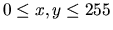
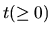
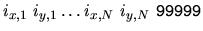
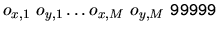
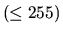
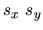
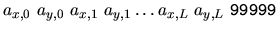

| Digital Racing Circuit |
You have an ideally small racing car on an x-y plane ( , where bigger y denotes upper coordinate). The racing circuit course is figured by two solid walls. Each wall is a closed loop of connected line segments. End point coordinates of every line segment are both integers (See Figure 1). Thus, a wall is represented by a list of end point integer coordinates (x1, y1), (x2, y2), ..., (xn, yn). The start line and the goal line are identical.
Figure 1. A Simple Course
For the qualification run, you start the car at any integer coordinate position on the start line, say (sx , sy).
At any clock , according to the
acceleration parameter at t,
(ax,t,
ay,t), the velocity changes instantly to (vx,t-1
+ ax,t, vy,t-1 +
ay,t), if the velocity at t - 1 is (vx,t-1,
vy,t-1). The velocity will be kept constant
until the next clock. It is assumed that the velocity at clock -1, (vx,-1,
vy,-1) is (0, 0). Each of the acceleration components
must be either -1, 0, or 1, because your car does not have so fantastic engine
and brake. In other words, any successive pair of velocities should not differ
more than 1 for either x-component or y-component. Note that your
trajectory will be piecewise linear as the walls are.
Your car should not touch nor run over the circuit wall, or your car will
be crashed, even at the start line. The referee watches your car's trajectory
very carefully, checking whether or not the trajectory touches the wall or
attempts to cross the wall.
The objective of the qualification run is to finish your run within as
few clock units as possible, without suffering from any interference by other
racing cars. That is, you run alone the circuit around clockwise and reach,
namely touch or go across the goal line without having been crashed. Don't be
crashed even in the last trajectory segment after you reach the goal line. But
we don't care whatever happens after that clock.
Your final lap time is the clock t when you reach the goal line
for the first time after you have once left the start line. But it needs a
little adjustment at the goal instant. When you cross the goal line, only the
necessary fraction of your car's last trajectory segment is counted. For
example, if the length of your final trajectory segment is 3 and only its 1/3
fraction is needed to reach the goal line, you have to add only 0.333 instead of
1 clock unit.
Drivers are requested to control their cars as cleverly as possible to
run fast but avoiding crash. ALAS! The racing committee decided that it is too
DANGEROUS to allow novices to run the circuit. In the last year, it was reported
that some novices wrenched their fingers by typing too enthusiastically their
programs. So, this year, you are invited as a referee assistant in order to
accumulate the experience on this dangerous car race.
A number of experienced drivers are now running the circuit for the
qualification for semi-finals. They submit their driving records to the referee.
The referee has to check the records one by one whether it is not a fake.
Now, you are requested to make a program to check the validity of driving
records for any given course configuration. Is the start point right on the
start line without touching the walls? Is every value in the acceleration
parameter list either one of -1, 0, and 1? Does the length of acceleration
parameter list match the reported lap time? That is, aren't there any excess
acceleration parameters after the goal, or are these enough to reach the goal?
Doesn't it involve any crash? Does it mean a clockwise running all around? (Note
that it is not inhibited to run backward temporarily unless crossing the start
line again.) Is the lap time calculation correct? You should allow a rounding
error up to 0.01 clock unit in the lap time.
The input consists of several courses and the first line of input is number of courses.
A course configuration is given by two lists representing the inner wall
and the outer wall, respectively. Each list shows the end point coordinates of
the line segments that comprise the wall. A course configuration looks as
follows:


where data are alternating x-coordinates and y-coordinates
that are all non-negative integers  terminated by 99999. The start/goal line is a line segment
connecting the coordinates
(ix,1,
iy,1) and
(ox,1,
oy,1). For simplicity, iy,1 is
assumed to be equal to oy,1; that is, the start/goal
line is horizontal on the x-y plane. Note that N and
M may vary among course configurations, but do not exceed 100, because
too many curves involve much danger even for experienced drivers. You need not
check the validity of the course configuration.
A driving record consists of three parts, which is terminated by
99999: two integers sx,
sy for the start position
(sx,
sy), the lap time with three digits after the decimal
point, and the sequential list of acceleration parameters at all clocks until
the goal. It is assumed that the length of the acceleration parameter list does
not exceed 500. A driving record looks like the following:

lap-time

The list of the record of a course is terminated by a null driving
record; that is, it is terminated by a 99999 that immediately follows
99999 of the last driving record.
1
6 28 6 32 25 32 26 27 26 24 6 24 99999 2 28 2 35 30 35 30 20 2 20 99999 3 28 22.667 0 1 1 1 1 0 0 -1 0 -1 1 0 0 0 1 0 -1 0 0 -1 -1 -1 -1 0 -1 0 -1 -1 -1 1 -1 1 -1 1 -1 0 1 0 1 1 1 1 1 0 1 1 99999 5 28 22.667 0 1 -1 1 1 0 1 -1 1 -1 1 0 1 0 1 0 -1 -1 -1 0 -1 -1 -1 0 -1 1 -1 -1 -1 1 -1 0 -1 1 -1 0 1 0 1 0 1 1 1 1 1 1 99999 4 28 6.333 0 1 0 1 1 -1 -1 -1 0 -1 0 -1 0 -1 99999 3 28 20.000 0 -1 1 -1 1 0 1 1 1 1 1 0 -1 0 -1 0 -1 1 -1 1 -1 1 -1 0 -1 -1 -1 -1 -1 -1 -1 0 1 0 1 -1 1 -1 1 -1 99999 99999
OK NG NG NG